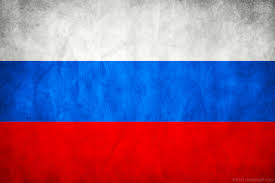

		<script type="text/javascript">
$(function () {
    $('#drapeaux').highcharts({
        chart: {
		type: 'column'
		
        },
        title: {
            text: 'Consommation mondiale de spiritueux'
        },

        xAxis: {
		categories: [
                'Vodka',
		 'Rhum',
		 'Whiskey',
		 'Gin',
		 'Tequila'
             
            ],
		labels: {
        		useHTML: true,
        		formatter: function() {
         		 if (this.value == "Vodka")
            			return '' + this.value ;
			 if (this.value == "Rhum")
            			return '' + this.value;
			 if (this.value == "Whiskey")
            			return '' + this.value;
         		 if (this.value == "Gin")
            			return '' + this.value;
         		 if (this.value == "Tequila")
            			return '' + this.value;
			 else
            			return this.value;
				}
			}
            
        },
        yAxis: {
            min: 0,
            title: {
                text: 'Quantité alcool'
            }
        },
        tooltip: {
            headerFormat: '<span style="font-size:10px">{point.key}</span><table>',
            pointFormat: '<tr><td style="color:{series.color};padding:0"> </td>' +
                '<td style="padding:0"><b>{point.y:.1f} milliers de litres</b></td></tr>',
            footerFormat: '</table>',
            shared: true,
            useHTML: true
        },
        plotOptions: {
            column: {
                pointPadding: 0.2,
                borderWidth: 0
            }
        },
        series: [{
            showInLegend: false,
            data: [4400, 1470 ,860,440,230]

        }]
    });
});
		</script>
